Historias que me gusta recordar
Show de delfines y lobos marinos
Cuando tenía algunos 5 años mi papa nos llevó a un show de delfines y lobos marinos a una feria que vino a Los Mochis, aún recuerdo que me subí en la rueda de la fortuna, el carrusel, y cuando me tome esa fotografía con los lobos marinos aunque yo quería tomarme con los delfines, desde ese día los delfines los considere como mi animal favorito.
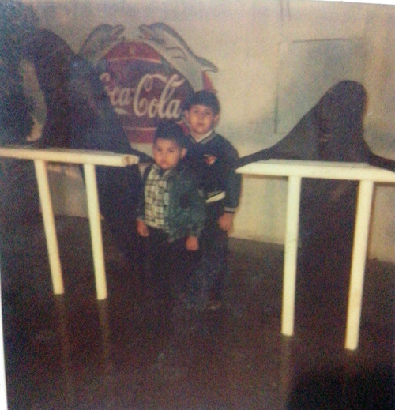Cumpleaños
Me gusta recordar mis cumpleaños y las personas que estuvieron ahí para celebrarlo, estas fotografías son de cuando cumplí 17,19,y 20 años.
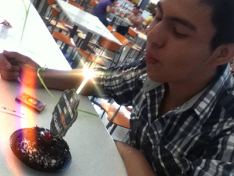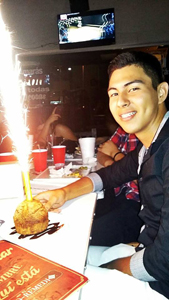
Aprendiendo a patinar
Cuando fui a la pista de hielo con mis amigos, ahí me enseñe a patinar por primera vez, tarde menos de una hora aprender, me caí unas 8 veces ese día hasta llegue a sacarme sangre de los brazos cuando me raspaba en el hielo, después volvíamos a ir mas días, incluso dos años, y en esas veces me divertía mucho porque chocaba con otras personas porque no se frenar aun, y mientras nos tomábamos foto salían personas cayéndose en el hielo, o una niña que llega con nosotros y posa en la foto y ni siquiera la conocíamos.
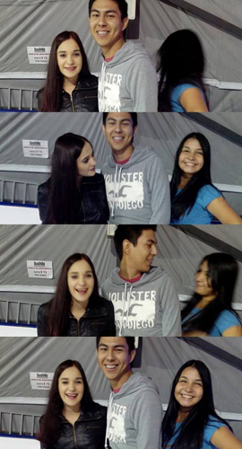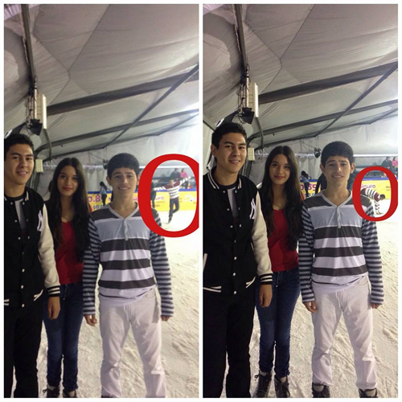
Fotos de algunas de las veces que fui con mis amigos a patinar en hielo
Ganando en un concurso
Cuando estaba en primero de prepa fui con amigas a comer a Tostileyva y había una concurso, sobre subir una foto en tostileyva consumiendo algún producto y la foto con más likes se ganaría una sesión de fotos gratis, y nos animamos y ganamos, aunque me divertí mucho, no me gustaron las fotos.
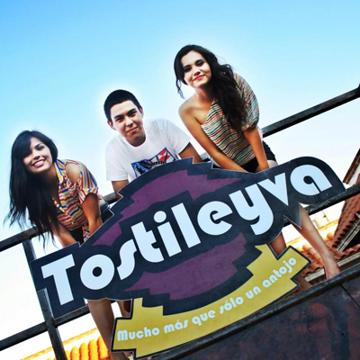Rodadas
Me gusta mucho andar en bici y algunas veces que he ido a rodadas, de rueda verde y rodada dragón, en una ocasión de rueda verde llegue hasta el punto más lejos del recorrido donde teníamos que dar vuelta para regresarnos, y en cuanto llegue a lo más lejos se me cae el pedal izquierdo y se me pierde un tornillo y yo vivía muy lejos de ahí y ya eran las diez de la noche y un amigo me cambio su bici por la mía para yo llegar a mi casa en ella y ya otro día ir por mi bici, desde entonces antes de ir a una rodada le doy mantenimiento a mi bicicleta.
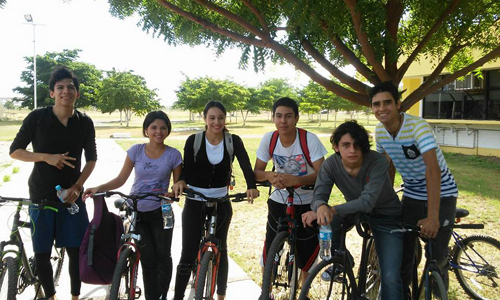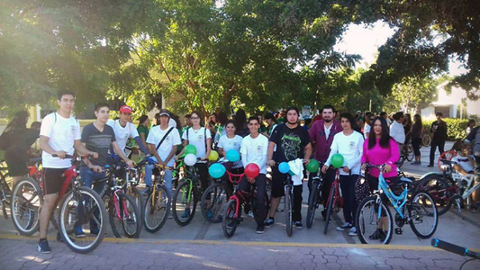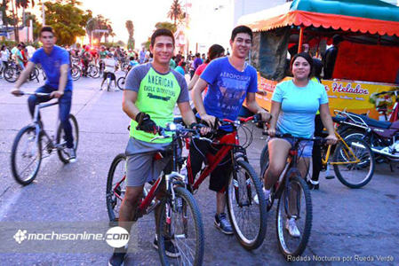
Fiestas de Halloween
Cuando en Halloween me disfrace por primera vez yo y mi mejor amiga sobre personajes del mundo de los comics de DC ella del Guason y yo de El Diablo, y ahí en la fiesta nos hicimos amigos de otros que iban también del mismo tema que nosotros.
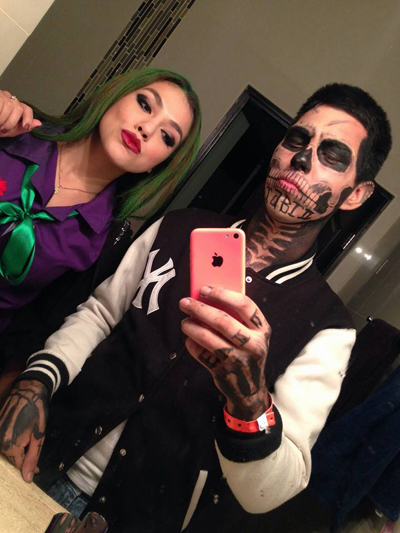Salidas con amigos
Las veces que he salido con mis amigos a pasarla bien en alguno de sus cumpleaños, en restobares, cenando y bebiendo un poco, hablando sobre cualquier tontería.
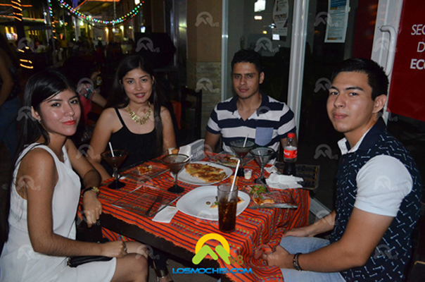
Haciendo mi Servicio Militar
Cuando hice mi servicio militar, aprendí a marchar, primeros auxilios, armamento, ecología, y muchas cosas, pase buenos y malos momentos ahí, y me demostré a mí mismo hasta donde puedo aguantar. También hice amigos ahí y cumplí esa responsabilidad como mexicano.
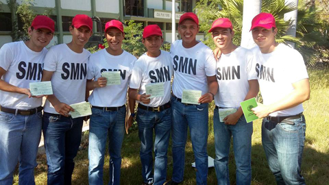
Fotos con algunos de mis compañeros del SMN como Emmanuel, Manuel, Eduardo y Marco.
Visitando el acuario
Cuando fuimos a Mazatlán toda mi familia y llegamos al acuario porque tenía muchas ganas de ir y ahí conocí todos aquellas especies de animales que desde niño siempre quise verlas vivas, y también fuimos al zoológico, y me la pase muy bien, parecía niño en disneylandia.
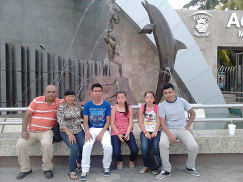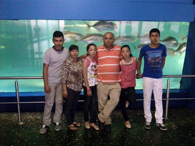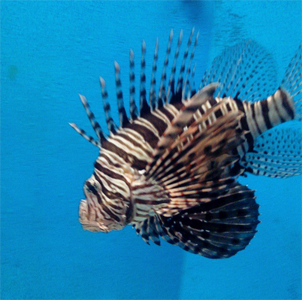
Foto con mi familia dentro y fuera del Acuario de Mazatlan, y foto que tomé de un Pez Leon
Paseo en la playa de Nayarit
Cuando fuimos de semana santa a Nayarit y fuimos a Otatitos, un centro botanero y ahí tenían unas lanchas que jalaban a muy alta velocidad un inflable donde podías subirte y vivir algo de adrenalina y diversión, al principio yo no quería porque le tengo fobia a lo profundo porque no se nadar bien, y al final si me anime junto con mis primos porque nos dieron chaleco salvavidas y me la pase muy padre y quisiera volver a subirme.
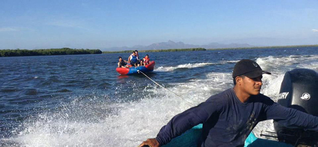
Viendo el estreno de una película
Cuando fui a la función de las doce de la noche de la película de Civil War con mi amiga Alondra y su novio y llegamos y estaba llenísimo de jóvenes queriendo entrar a verla desesperados y nos metimos sin hacer cola y a mí me querían sacar pero corrí y me les perdí a los guardias, y fui de los primeros en entrar.
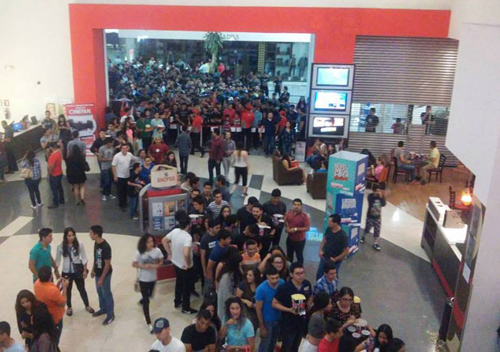
Foto minutos antes de entrar a la función de la película. En Cinemex Paseo Los Mochis el 29 Abril 2016.
Acampando en la playa de San Juan
Cuando acampe por primera vez. Siempre había querido acampar en la playa y aunque no era como le lo imaginaba si me la pase muy bien, fui con dos amigos y la familia de mi amigo, y acampamos junto con 200 familias más aproximadamente, yo no sabía que en San Juan en semana santa muchas personas iban allá a pasar días acampando, había negocios de comida, cruz roja, y muchas cosas, pero era una batalla conseguir baño para hacer las necesidades básicas.
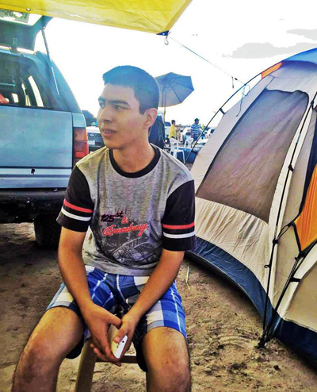
Alimentando un ganado
Cuando voy al rancho en Mocorito y voy a veces con mi tio a ayudarle a llevar agua a el ganado que tiene.
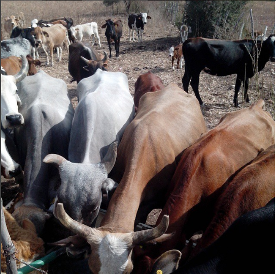
Foto que tomé de el ganado de mi tío bebiendo agua